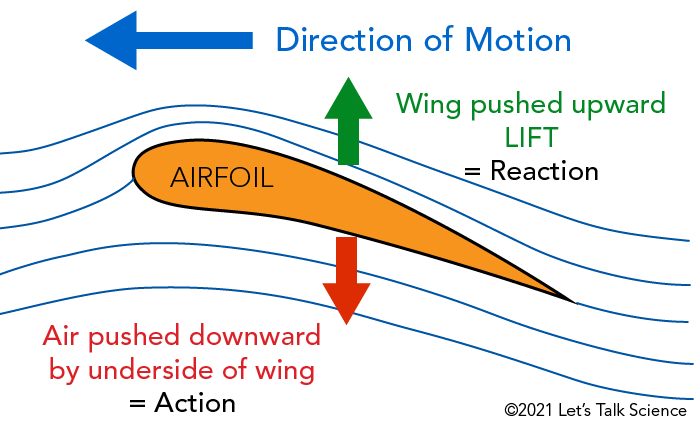
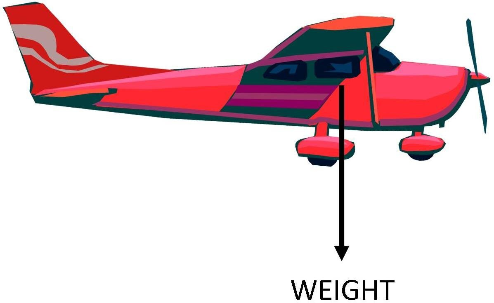
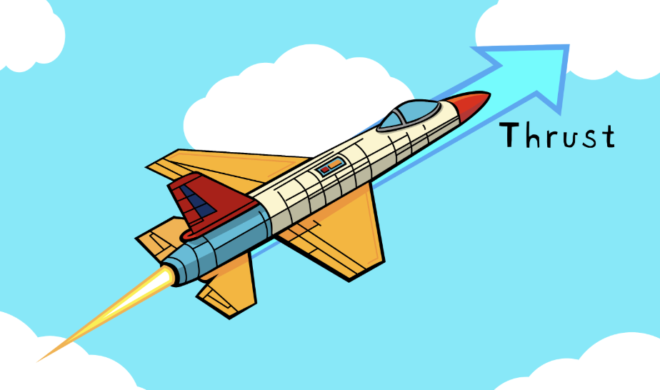
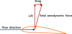

What is Aerodynamics?
Aerodynamics is the study of the interaction between moving objects and the flow of air around them. Specifically, it examines the forces exerted on objects by moving air. Aerodynamics is crucial to aerospace engineering because it explains the underlying physics principles of flight. Aerodynamic forces, air pressure, and air flow are all key factors that must be taken into consideration when designing aircraft. Let's dive right into it.
Four Forces of Flight
Lift
Description
Lift is the force that pushes upward, and it is the force opposite to weight. For something to fly, it has to generate more lift force than its weight.
How is lift generated?
Lift is generated through the deflection of air flow. Think of air moving in a straight horizontal line. When it hits a slanted surface, it is deflected upwards or downwards depending on the angle of the surface. According to Newton's Third Law, when the surface exerts a force to deflect air, the air exerts an equal and opposite force on the surface.

Weight
Description
Weight is the force exerted by gravity on an object. Weight is a downwards force that opposes lift. Unlike the other forces, which involve physical contact, weight is a field force.
How is weight measured?
Newton's theory of gravitation shows that the gravitational force between two objects depends on their masses and the inverse square of their distance. Objects with more mass have a stronger gravitational force and vice versa. Objects farther apart have a weaker gravitational force and vice versa.

Thrust
Description
Thrust is the forward force that is generated from an aircraft's engines and propulsion system. It is essential to overcome drag and move through the air.
How is thrust generated?
Similar to lift, thrust is also generated through Newton's Third Law of Motion. The propulsion system essentially propels a mass of gas or liquid forward, creating an equal and opposite reason. This reverse push is the thrust that drives the aircraft forward.

Drag
Description
Drag is the force that resists the motion of an aircraft through the air. It acts parallel and opposite to the thrust.
How is drag generated?
Drag mainly comes from the difference in air pressure between the front and back of the object. This pressure difference creates a low-pressure wake behind the aircraft. There is also skin friction drag, which comes from the viscosity of the air. As the air molecules slide over the object, a microscopic layer of friction is generated that pulls along the surface.
